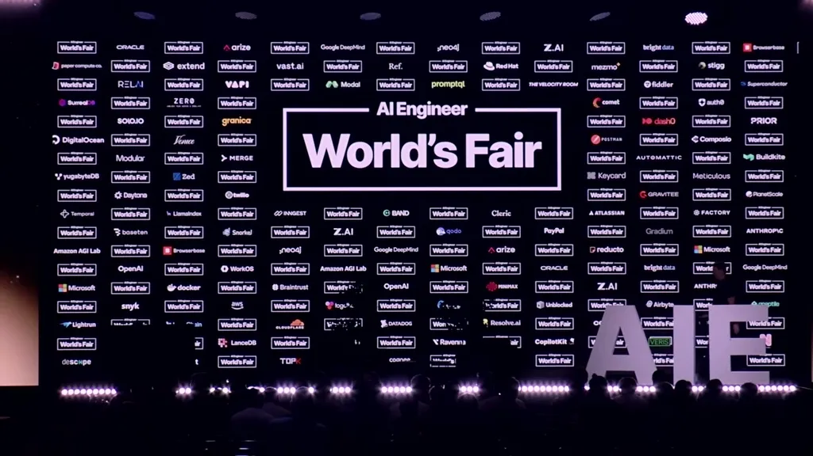
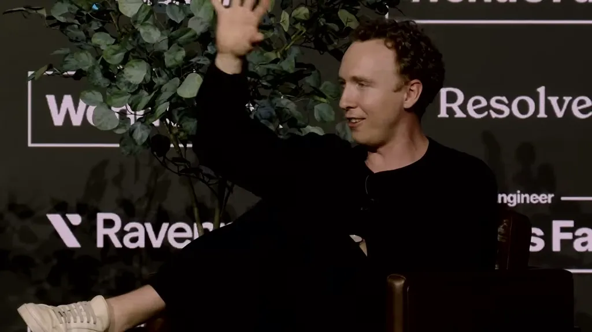
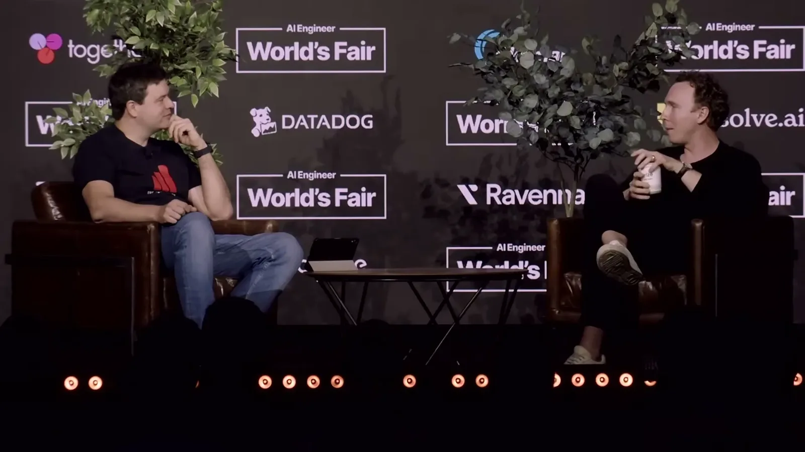
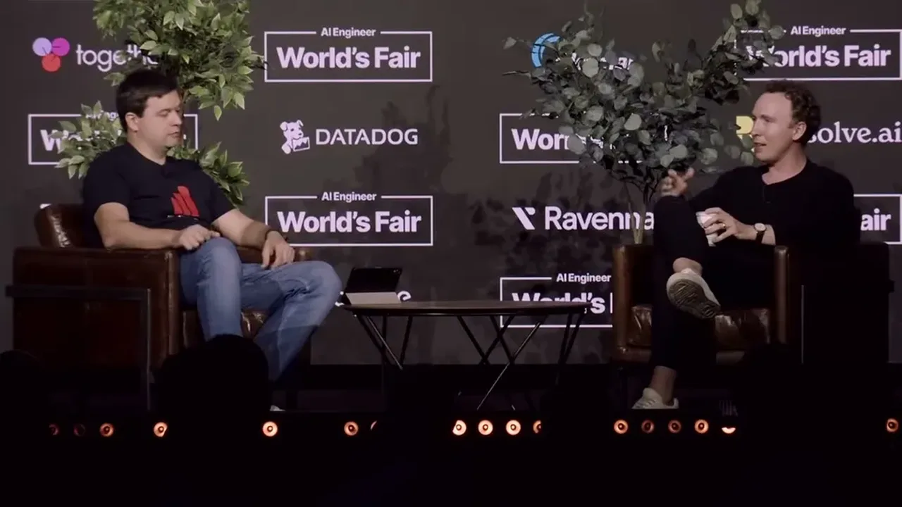
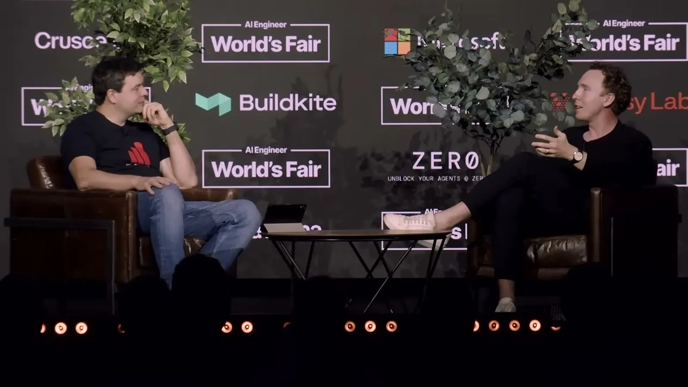
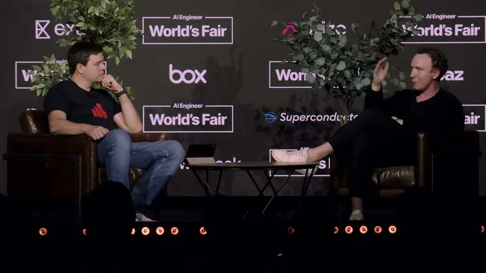
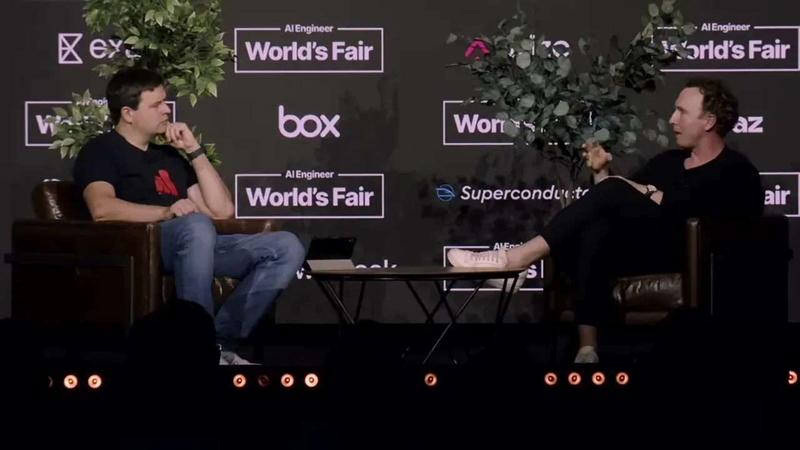
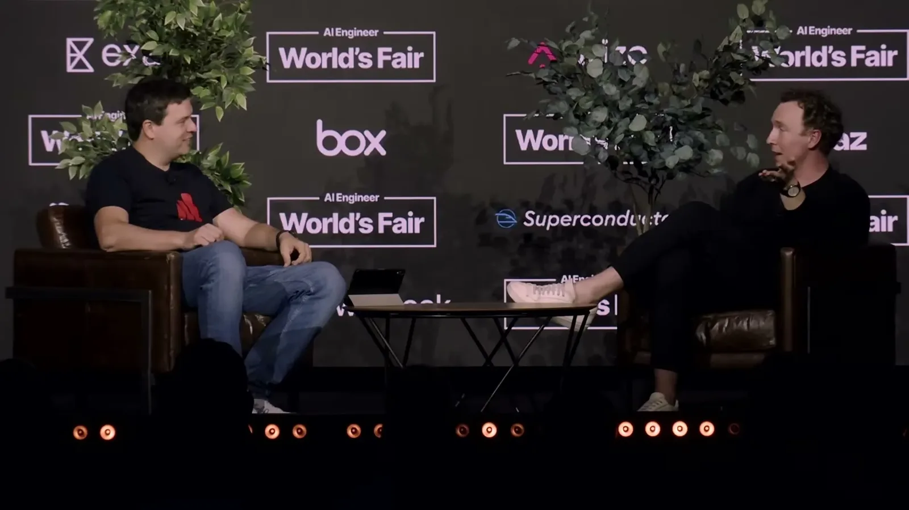
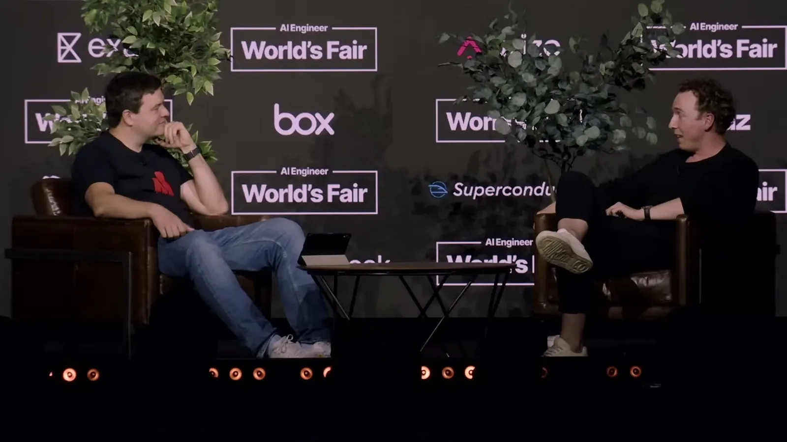

Informs infrastructure decisions for anyone evaluating a vector or search database: when object storage is viable for a latency-sensitive read path, why first-principles capacity math should override a vendor's raw benchmark number, and ...
Eskildsen used his own hardware-cost table to justify betting on S3 despite its 200ms latency, and that low-cost storage bet is what let Turbopuffer undercut Cursor prior vendor (ours).
“napkin math was essentially just this table that I maintain on GitHub of how much bandwidth can you drive to DRAMM, what does a roundtrip to S3 cost, and how long does it take, how much bandwidth can you drive to an NVME SSD”
said at 16:00“database A that you're saying takes 10 seconds to do this should take 10 milliseconds if you do the napkin math right if it's a search query right it's like okay you're searching for three terms”
said at 17:33“and did the napkin math one day of like can we just use it all in S3 and do some clustering and then organize the files and just the way and it's like maybe you could build that”
said at 24:15“The P99 on a uh 256 or 512 kilobyte object on S3 um is around 200 milliseconds.”
said at 24:45“you could do a million vectors for a dollar. And before that, I think the the cheapest was maybe $100 per million for something that actually worked.”
said at 30:27“I told them that I was going to reduce their bill by 95%. And I did like we did. Justine and I did.”
said at 33:33“the labs are sucking up a lot of CPUs because you need CPUs to be like, okay, we need to like teach this model how to how to search.”
said at 39:20“the third reason to to to raise capital is for the founders's ego.”
said at 49:46Eskildsen is describing Turbopuffer's own numbers (95% cost cut, $1/million vectors), so those figures reflect one company's outcome against one prior vendor's pricing, not a general savings rate to expect elsewhere (ours).









| Stance | Claim | t |
|---|---|---|
| asserts | Eskildsen maintains a public table of hardware costs and latencies — DRAM bandwidth, S3 round-trip cost, NVMe throughput — to sanity-check infrastructure decisions. | 16:00 |
| warns | Eskildsen distrusts vendor benchmarks that don't match first-principles capacity math, citing a case where a claimed 10-second query should have taken 10 milliseconds. | 17:33 |
| asserts | Turbopuffer's original design stored vectors directly in S3 with a clustering scheme instead of keeping them in expensive DRAM. | 24:15 |
| asserts | The P99 latency for a 256-512KB object stored in S3 is around 200 milliseconds, which drove Turbopuffer's multi-round-trip design. | 24:45 |
| asserts | Turbopuffer launched at a million vectors for a dollar, versus roughly $100 per million for the cheapest working alternative at the time. | 30:27 |
| asserts | After migrating to Turbopuffer, Cursor's database bill dropped 95% compared to its previous vendor. | 33:33 |
| asserts | RL training workloads are consuming a large and growing share of CPU capacity, making CPUs scarce for AI labs alongside GPUs. | 39:20 |
| recommends | Eskildsen says raising venture capital for founder ego and press attention is a dangerous reason to raise, since it dilutes every employee. | 49:46 |
Machine-readable copy embedded in this page (script#ontology) and in the corpus ontology.